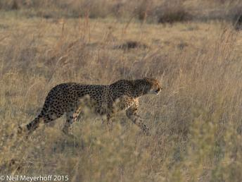
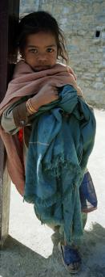
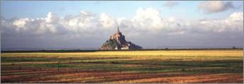
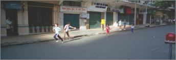

%1
The Dutch Reformed Church was built in 1755 on the site of an earlier Portuguese convent, and was resorted in 2004. This church, appropriately sited on Church Street, is next to the Amangalla hotel, seen to the right, which was originally built in 1684 for the Dutch governor. Olympus OMD EM-1, 1/320@13, 12mm, ISO 200  Click image to enlarge. |
|||
This cheetah is stalking a herd of impalas unaware that a male lion is nearby, Okavango Delta. Olympus OMD, EM-1, 1/500@f4.5, 210mm, ISO 400 Click image to enlarge. |
|||
This young girl was standing in a doorway in Bangalore, India in the state of Karnataka. As can be seen from the condition of her clothes, she is from a very poor family. However, she was willing to have me approach her and allow her photograph to be taken. This panoramic photograph was taken with a Hasselblad X-pan camera. Click image to enlarge. |
|||
This is the Romanesque bell tower added to the 7th century St. Dominus cathedral that originally the mausoleum of Diocletian who built his palace at Split, Croatia in the 3rd century C.E.  Click image to enlarge. |
|||
American Flag at head of driveway with basketball hoop and childrens' bikes. Panasonic DMC-LX3, 5.1mm, 1/1000@f5.6.  Click image to enlarge. |
|||
Mont St. Michel, located in Normandy, in northwestern France, is the most visited tourist location in France outside of Paris. The rock began to be used for religious purposes in the 6th century, although the massive Romanesque abbey on top of the rock was built in the 11-12th centuries. The fields in this panoramic photograph are in Brittany, while the rock itself is in the province of Normandy. Click image to enlarge. |
|||
RUNNERS IN EARLY MORNING FITNESS RACE Click image to enlarge. |
|||
These two girls are at the solstice/harvest festival in the tiny village of Azama in Imbabura province. There were lots of girls running around and I would point the camera at some of them, and they would stop to have their photo taken. Here the one wrapped her arms around her friend. I want to get close to the subjects so as to create a connection with them. Olympus OMD EM-5, 23mm, 1/200@f2.8  Click image to enlarge. |
|||
This fisherman is dragging a net along the top of the water, at the edge of a rice field, along the Kaladan River, in order to catch fish. Olympus OMD EM-5, 33mm, 1/640@f8  Click image to enlarge. |
|||
While sitting on the 3rd floor terrace of the Taros restaurant on the edge of the Place Prince Moulay El Hassan, I noticed that the mid-day sun was creating a large number of geometric patterns throughout in the restaurant. I went around photographing various light patterns on the simple blue and white furniture and white walls in the restaurant. Olympus OMD EM-1, ISO 200, 40mm, 1/125@f13.  Click image to enlarge. |
|||